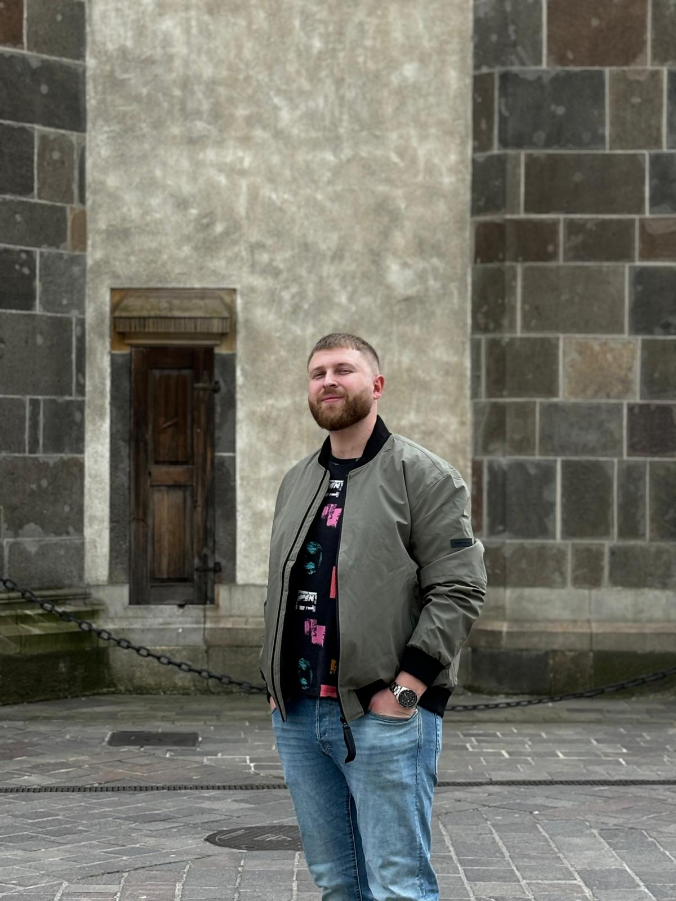

I am currently in my second year of a master’s program in Applied Informatics, having previously graduated with a bachelor degree in Automation and Computer Science. I have a strong passion for web development and have gained practical experience working with various technologies such as Java, C#, relational and non-relational databases, React, HTML, and CSS. My background in both software development and system automation provides me with a solid foundation to build scalable and efficient applications across multiple platforms.
